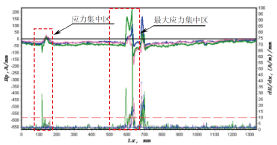
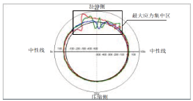

创新专利三端式磁通门传感器
精密手工制作融合现代工艺制程
工业现场关键应用
石油钻井、煤层气采掘、油气管道检测、空运杂散磁检、航磁物探...
麦格韦尔磁电实验室是海事大学旗下从事磁电技术研发、磁电仪器、设备生产的大型实验室，是海事大学为加速科技成果产业化，全校成立的第一家磁电领域的重点实验室。
1000年前，伟大的探险家利用指南针－中国人的磁技术开始了改变了世界的格局的探险；1000年后的今天，麦格韦尔开始了发展自主知识产权，振兴中国人磁电产业的征程。
手机：18601612447 彭老师
13901633386 胡老师
传真：021－51069461
邮箱：jiehu@shmtu.edu.cn
magwell@126.com
地址：上海市海港大道1550号泰山科研楼
邮编：201306
金属磁记忆检测（Metal Magnetic Memory Testing，简称MMM）是俄罗斯Dubov.A.A 教授于20 世纪90 年代初提出，并于90年代后期发展起来的一种材料应力集中和疲劳损伤无损检测与诊断的新方法。自1997年在美国旧金山举行的第50届国际焊接学术会议上得到国际社会的承认后，成为世界各国同仁的研究热点，在许多国家和地区迅速得到推广应用。
人们将磁记忆检测方法用于热处理、金属机械性能的质量控制以及管道焊缝的检测等领域。 金属磁记忆检测法，这是一种无损检测方法，其基本原理是记录工作载荷作用下设备在应力集中区中产生的自有漏磁场。拉伸、压缩、扭曲和周期性载荷作用下的金属磁记忆效应，最早是在实验室和工业研究中发现的。磁记忆检测方法的独到之处还在于，它利用工作载荷的作用，在稳定的滑移位错带区域产生的自有漏磁场。存在微弱地球磁场时，在受检物体应力集中区的表面将形成的漏磁场梯度，使用专门的磁检测设备（例如磁通门）能确定该梯度值的大小。区迅速得到推广应用。
在滑移位错聚积区产生自有漏磁场的机理是源于这些聚积变成和磁畴壁厚相等时磁畴边界的固锁效应。任何条件下对工作结构的人工磁化，都得不到象自有磁场那样的信息源，只有象地球磁场这样微弱的外部磁场，承载结构上的变形能量，又远大于外部磁场的能量时，才能形成和得到那样的信息。金属磁记忆检测是利用结构自身辐射出的信息，不仅能检测处在运行状态下的设备，也能在设备修理时进行检测。同时，金属磁记忆检测除了能早期发现正在发展着的缺陷外，还能进一查明受检对象的实际应力-变形状态，找出产生破损的根源。
 我国是在1999年底开始引进此项技术，同样引起了国内同行的广泛兴趣和高度重视。相对于其他常规的无损检测方法，金属磁记忆由于具备效率高、成本低、无需打磨、无需充磁等诸多的优点，在工业上具有重要而广泛的应用前景。目前此种检测法已经在石油管道、压力容器、涡轮机、锅炉、航空航天及船舶制造方面得到实际应用。
| 最 新 消 息 |
|---|
 |
| MAGWELL地磁测量装置及梯度仪装备在小型固定翼/旋翼飞机上，进行多种物探、测量作业。 |
| 最 新 消 息 |
|---|
 |
| 2013.07.14,MAGWELL实现百米长距离穿针，跨越旋转磁场导航技术极限 |